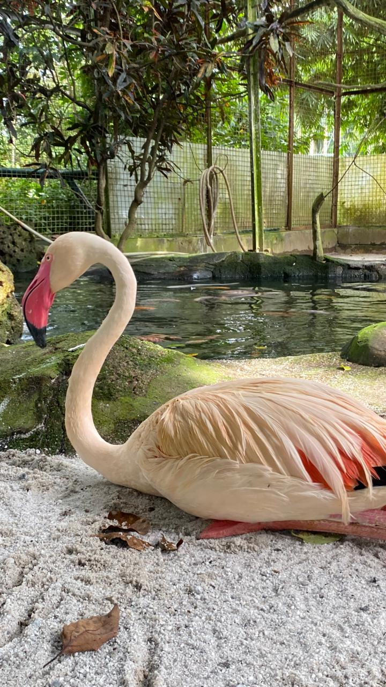

Flamingo

- Scientific Name: Phoenicopterus roseus
- Habitat: Saline lakes, estuarine lagoons, and marshes.
- Fun Fact: Flamingos get their signature pink color from their diet! They eat brine shrimp and blue-green algae, which are rich in alpha and beta carotene.
- Conservation Status: Least Concern
← Back to Animal List